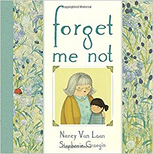

Forget Me Not
By Nancy Van Laan and Stephanie Graegin
When she called me Sally or Harry instead of my real name, Julia, I pretended it was a game that Grandma liked to play.
Young readers are given an emotionally powerful yet accessible introduction to what it is like having a close family member with Alzheimer's disease in this deeply resonant story about the relationship between a girl and her grandmother.
Grandma's whole family is concerned as they start to notice that she is becoming more and more forgetful. After they find her wandering the neighborhood, they need to make an important decision on her behalf—that the time has come for her to move out of her house and into an assisted living community where she can have the best care possible.
Age Range: 4 - 8 years
Find out more:
here